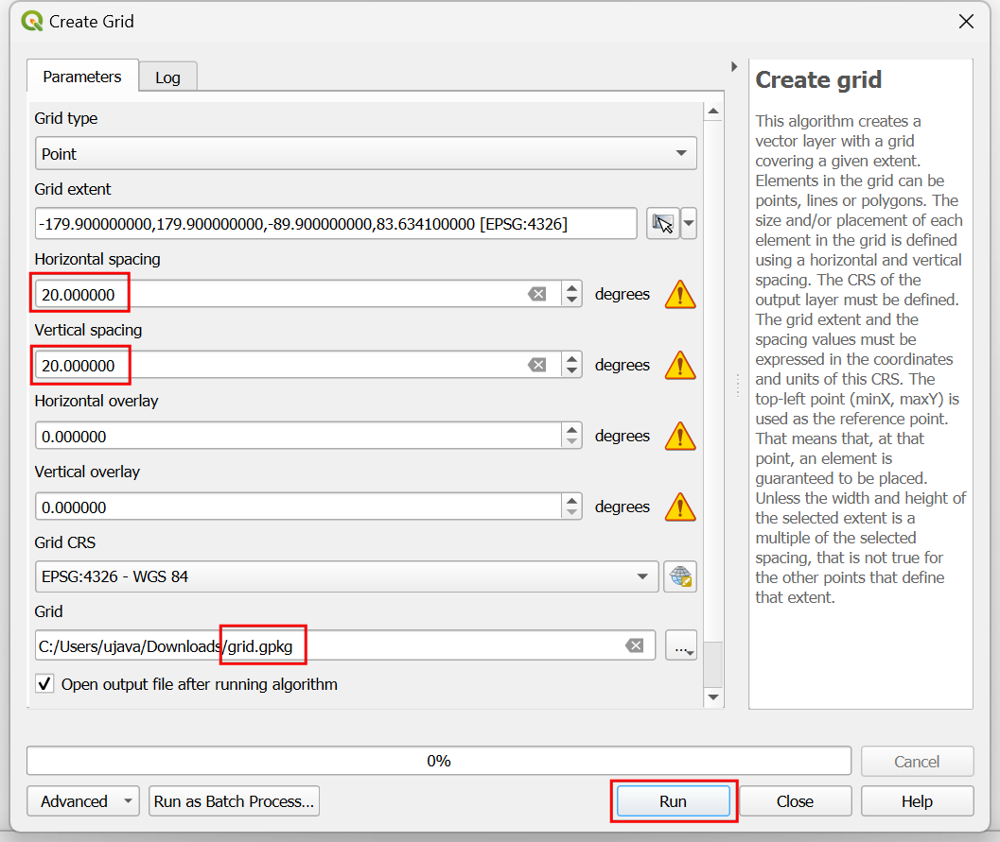
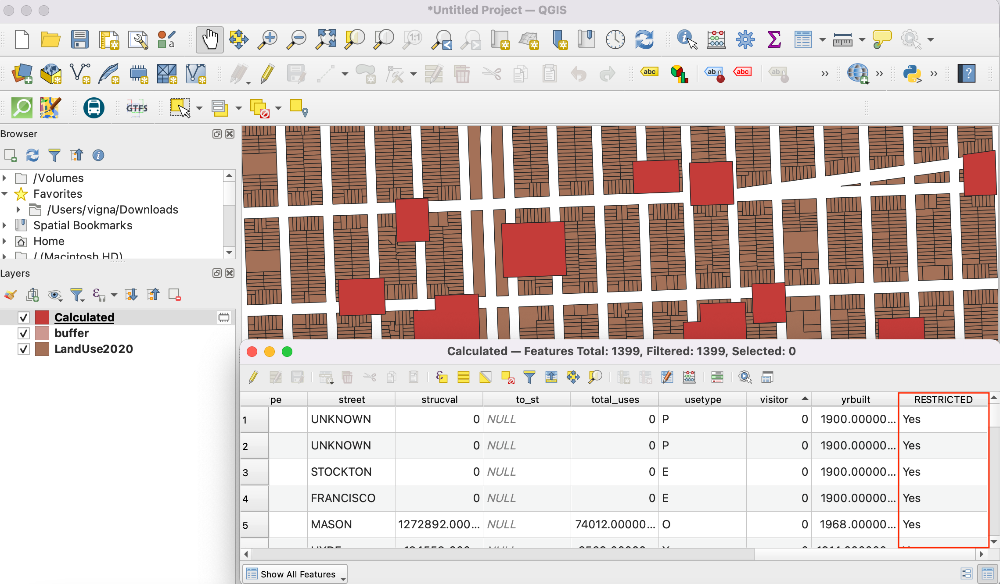
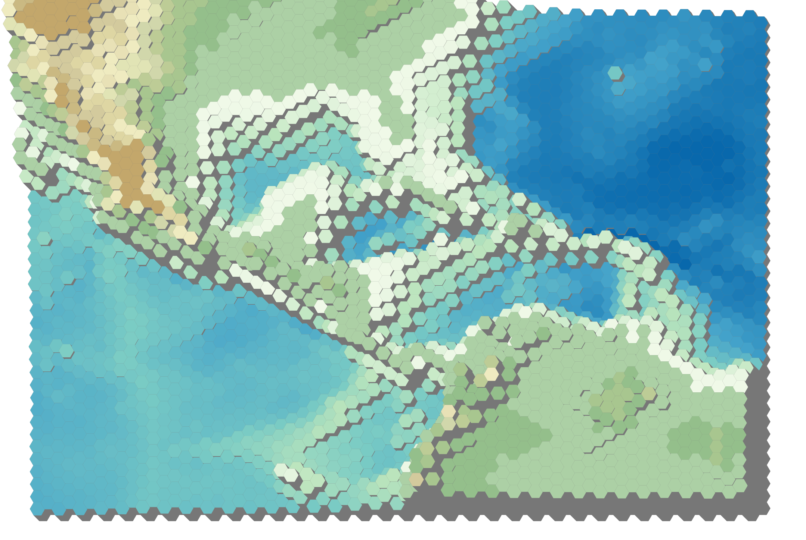

Φτιάχνοντας ένα χάρτη (QGIS3)¶
Συχνά χρειάζεται να δημιουργήσουμε ένα χάρτη που θα μπορεί να εκτυπωθεί ή να δημοσιευθεί. Το QGIS διαθέτει ένα ισχυρό εργαλείο που ονομάζεται Διάταξη εκτύπωσης που σας επιτρέπει να συγκεντρώσετε τα επίπεδα GIS και να τα ομαδοποιήσετε δημιουργώνταας χάρτες.
Επισκόπηση της διαδικασίας¶
Αυτός ο οδηγός θα σας δείξει πώς να δημιουργήσετε έναν χάρτη της Ιαπωνίας χρησιμοποιώντας πρότυπα στοιχεία χάρτου όπως ένθεση χάρτη, πλέγματα, βέλος βορά, γραμμή κλίμακας και ετικέτες.
Άλλες δεξιότητες που θα αποκτήσετε¶
Πώς να προβάλλετε και να αλλάξετε τις Μεταβλητές Έργου QGIS
Πώς να χρησιμοποιήσετε τις εκφράσεις QGIS
Λάβετε τα δεδομένα¶
Θα χρησιμοποιήσουμε τα πακέτα δεδομένων της Natural Earth Data - ειδικότερα, το Natural Earth Quick Start Kit που συνοδεύεται από παγκόσμια επίπεδα με όμορφα στυλ που μπορούν να φορτωθούν απευθείας στο QGIS.
Download the Natural Earth Quickstart Kit. If the download link doesn’t work, get it directly from Natural Earth Downloads page.
Data Source [NATURALEARTH]
Διαδικασία¶
Κατεβάστε και αποσυμπιέστε τα δεδομένα του πακέτου Natural Earth Quick Start Kit. Ανοίξτε το QGIS. Εντοπίστε τον κατάλογο
Natural Earth quick startαπό τον πίνακα Browser. Ανοίξτε τον κατάλογο για να εντοπίσετε το έργοNatural_Earth_quick_start_for_QGIS_v3. Αυτό είναι το αρχείο έργου που περιέχει στυλιζαρισμένα επίπεδα σε μορφή QGIS Document. Διπλοπατήστε στο έργο για να το ανοίξετε.

Σημείωση
If you get a pop-up dialog named Handle Unavailable Layers, click the Auto-Find button followed by Apply Changes to fix the error.
If your map is in your preferred language, you can proceed to Step 4. If not, you can change the language of the labels. This project uses variables to set the language. We can change the variables by going to .

Σημείωση
Οι μεταβλητές έργου (ή εργασίας) είναι ένας σπουδαίος τρόπος να αποθηκεύετε τιμές που αφορούν σε ένα συγκεκριμένο έργο ώστε αυτές να χρησιμοποιηθούν οπουδήποτε χρησιμοποιούνται εκφράσεις QGIS. Το έργο Natural_Earth_quick_start_for_QGIS_v3 συνοδεύεται από πολλές προρυθμισμένες μεταβλητές οι οποίες χρησιμοποιούνται για να παράγονται στυλ μέσα στο έργο αυτό.
Ανοίξτε το φάκελο Variables του διαλόγου Project Properties. Εντοπίστε την μεταβλητή
project_languageκαι πατήστε στην στήλη Value για επεξεργαστείτε την τιμή της. Αλλάξτε την γλώσσα σεname_enκαι πατήστε OK.

Στο αρχικό παράθυρο του QGIS πατήστε το κουμπί Ανανέωση της Εργαλειοθήκη πλοήγησης χάρτη. Θα δείτε ότι ο χάρτης παίρνει Αγγλικές επιγραφές.

Use the pan and zoom controls in the Map Navigation Toolbar and zoom to Japan.

Μπορείτε να απενεργοποιήσετε κάποια επίπεδα για δεδομένα τα οποία δεν χρειαζόμαστε για τον χάρτη αυτό. Επεκτείνετε τον κατάλογο
z5 - 1:18mκαι αποεπιλέξτε το τετράγωνο δίπλα στα επίπεδαne_10m_geography_marine_polysκαιne_10m_admin_0_disputed_areas. Πριν κατασκευάσουμε ένα χάρτη κατάλληλο για εκτύπωση πρέπει να επιλέξουμε μια κατάλληλη προβολή. Το αρχικό CRS για το έργο μας είναι ρυθμισμένο σεEPSG:3857 Pseudo-Mercator. Το CRS αυτό είναι δημοφιλές για χαρτογράφηση στον Παγκόσμιο Ιστό και αποτελεί καλή επιλογή για τους σκοπούς μας ώστε μπορούμε να το αφήσουμε στην αρχική του τιμή. Ανοίξτε το μενού .

Σημείωση
Για την Ιαπωνία το Κοινό Ορθογώνιο Σύστημα Συντεταγμένων Ιαπωνίας είναι ένα σύστημα αναφοράς συντεταγμένων (CRS) σχεδιασμένο ώστε να ελαχιστοποιεί τις παραμορφώσεις. Διαιρείται σε 18 ζώνες και αν εργάζεστε για κάποια μικρότερη περιοχή της Ιαπωνίας η χρήση του CRS είναι καλύτερη.
Θα σας ζητηθεί να εισάγετε έναν τίτλο για την διάταξη Μπορείτε να τον αφήσετε κενό και να πατήσετε Ok.

Σημείωση
Αφήνοντας το όνομα της διάταξης κενό θα αποδοθεί αυτόματα ένα αρχικό όνομα, για παράδειγμα Layout 1.
Στο παράθυρο Διάταξη εκτύπωσης πατήστε στο κουμπί Πλήρης Μεγέθυνση για να προβάλλετε την Διάταξη σε πλήρη έκταση.

Τώρα πρέπει να φέρουμε στην διάταξη εκτύπωσης τον χάρτη που βλέπουμε στον καμβά του QGIS. Πηγαίνετε στο μενού .

Μόλις η λειτουργία Προσθήκη χάρτη ενεργοποιηθεί, κρατήστε πατημένο το αριστερό πλήκτρο του ποντικιού και σύρετε ένα παραλληλόγραμμο μέσα στο οποίο θέλετε να εισάγετε τον χάρτη.

Θα δείτε ότι το παραλληλόγραμμο παράθυρο θα γεμίσει με τον χάρτη από τον κύριο καμβά του QGIS. Ο παραγομενος χάρτης ίσως δεν καλύπτει πλήρως την επιφάνεια που μας ενδιαφέρει.. Χρησιμοποιείστε τις επιλογές και για να μετακινηθείτε μέσα στον χάρτη και να το κεντράρετε μέσα στο πρόγραμμα επεξεργασίας.

Ας ρυθμίσουμε επίσης το επίπεδο μεγέθυνσης για τον χάρτη. Πατήστε στον φάκελο Ιδιότητες στοιχείου, στα δεξιά και εισάγετε τον αριθμό
10000000ως τιμή για την Κλίμακα.

Τώρα θα προσθέσουμε ένα ένθετο στοιχείο χάρτη που δείχνει μια μεγεθυμένη άποψη της περιοχής του Τόκυο. Πριν κάνουμε οποιαδήποτε αλλαγή στο κύριο παράθυρο του QGIS ελέγξτε τα τετραγωνίδια Κλείδωμα επιπέδων και Κλείδωμα των στυλ για τα επίπεδα. Αυτό θα διασφαλίσει ότι αν απενεργοποιήσουμε κάποια επίπεδα ή μεταβάλουμε τα στυλ τους, η προβολή μας δεν θα αλλάξει.

Switch to the main QGIS window. Turn off the layer group
z5 - 1:18mand activate thez7 - 1: 4mgroup. This layer group has styling that is more appropriate for a zoomed-in view. Use the pan and zoom controls in the Map Navigation Toolbar and zoom around Tokyo.

Είμαστε τώρα έτοιμοι να προσθέσουμε το ένθετο χάρτη. Μεταβείτε στο παράθυρο Διάταξη εκτύπωσης. Πηγαίνετε στο μενού .

Σχεδιάστε ένα παραλληλόγραμμο εκεί όπου θέλετε να τοποθετηθεί ο ένθετος χάρτης. Θα παρατηρήσετε ότι τώρα υπάρχουν 2 χαρτογραφικά αντικείμενα στην Διάταξη εκτύπωσης. Κάθε φορά που προβαίνετε σε αλλαγές βεβαιωθείτε ότι έχετε επιλεγμένο τον σωστό χάρτη.

Επιλέξτε το αντικείμενο
Χάρτης 2που μόλις προσθέσατε από τον πίνακα Στοιχεία. Επιλέξτε τον φάκελο ιδιοτήτων Ιδιότητες στοιχείου. Κυλίστε προς τα κάτω έως τον πίνακα Πλαίσιο και επιλέξτε το τετραγωνίδιο δίπλα απο αυτόν. Μπορείτε να αλλάξετε το χρώμα και το πάχος του περιγράμματος του πλαισίου ώστε αυτό να ξεχωρίζει εύκολα μέσα στο φόντο του χάρτη.

Μια έξυπνη λειτουργία της Διάταξης εκτύπωσης είναι ότι μπορεί αυτόματα να επισημάνει την περιοχή του χάρτη που αναπαρίσταται στο ένθετο. Από τον πίνακα Στοιχεία επιλέξτε το αντικείμενο
Χάρτης 1. Στον φάκελο Ιδιότητες στοιχείου κυλείστε στην ενότητα Επισκοπήσεις. Πατήστε το κουμπί Προσθήκη νέας επισκόπησης.

Επιλέξτε
Χάρτης 2ως Πλαίσιο χάρτη. Αυτό λέει στην Διάταξη εκτύπωσης να επισημάνει το τρέχων αντικείμενοΧάρτης 1με την έκταση του χάρτη που φαίνεται στο αντικείμενοΧάρτης 2.

Τώρα που έχουμε τον ένθετο χάρτη έτοιμο θα προσθέσουμε στον κύριο χάρτη ένα πλέγμα. Επιλέξτε το αντικείμενο
Χάρτης 1από τον πίνακα :guilabel:Στοιχεία. Στον φάκελο Ιδιότητες στοιχείου κυλήστε προς τα κάτω στην ενότητα Πλέγματα. Πατήστε το κουμπί Προσθήκη νέου πλέγματος και μετά το πλήκτρο Τροποποίηση πλέγματος….

Ως αρχική ρύθμιση οι γραμμές του πλέγματος χρησιμοποιούν τις ίδιες μονάδες και προβολές με τις προβολές του τρέχοντος επιλεγμένου χάρτη. Όμως συνηθίζεται και είναι χρήσιμο οι γραμμές του πλέγματος να εμφανίζονται σε μοίρες. Μπορούμε να επιλέξουμε ένα διαφορετικό CRS για το πλέγμα. Πατήστε το κουμπί Αλλαγή… δίπλα στο CRS.

In the Coordinate Reference System Selector dialog, enter
4326in the Filter box. From the results, select theWGS84 EPSG:4326as the CRS. Click OK.

Select the Interval values as
5degrees in both X and Y direction. You can adjust the Offset to change where the grid lines appear.

Scroll down to the Grid frame section and check the Draw coordinates box. The default format is
Degreesbut it appears as a number. We can customize is to append a ° symbol. ChooseCustomand click the Expression button next to it.

Enter the following expression to create a string that takes the grid number and appends ° symbol to it.
concat(to_string(@grid_number), '° ')
Notice that the grids now have a custom label from the expression. Adjust the position settings for Left, Right, Top and Bottom as per your liking.

Now we will add a Rectangluar frame to hold other map elements like north arrow, scale and label. Go to .

You can change the Style of the rectangle to match the map background.

Now we will add a North Arrow to the map. QGIS comes with a nice collection of map-related images - including many types of North Arrows. Click .

Holding your left mouse button, draw a rectangle. On the right-hand panel, click on the Item Properties tab and select the SVG image section and scroll down to find arrows from the SVG Groups. Select the image of your liking.

Now we will add a scale bar. Click on .

Click on the layout where you want the scalebar to appear. In the Item Properties tab, make sure you have chosen the correct map element
Map 1for which to display the scalebar. Choose the Style that fit your requirement. In the Segments panel, change the Fixed width to200units and adjust the segments to your liking.

It is time to label our map. Click on .

Click on the map and draw a box where the label should be. In the Item Properties tab, expand the Label section and enter a label for the map. Similarly add another labels for data and software credits.

Once you are satisfied with the map, you can export it as an Image, PDF or SVG. For this tutorial, let’s export it as an image. Click .

Save the image in the format of your liking. Below is the exported PNG image.

If you want to give feedback or share your experience with this tutorial, please comment below. (requires GitHub account)